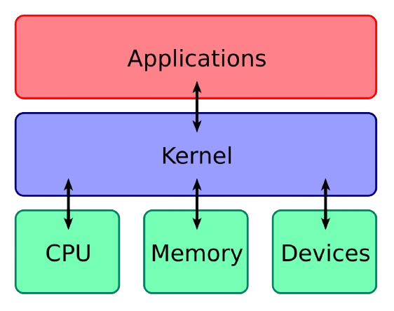

O que é o Kernel?
O Kernel é a parte principal do Linux. Ele faz a ligação entre os programas e o hardware do computador.
Para que serve?
Ele ajuda o sistema a controlar coisas como memória, processador, arquivos e outros componentes do computador.
Por que é importante?
Sem o Kernel, o Linux não conseguiria controlar o hardware e fazer os programas funcionarem corretamente.